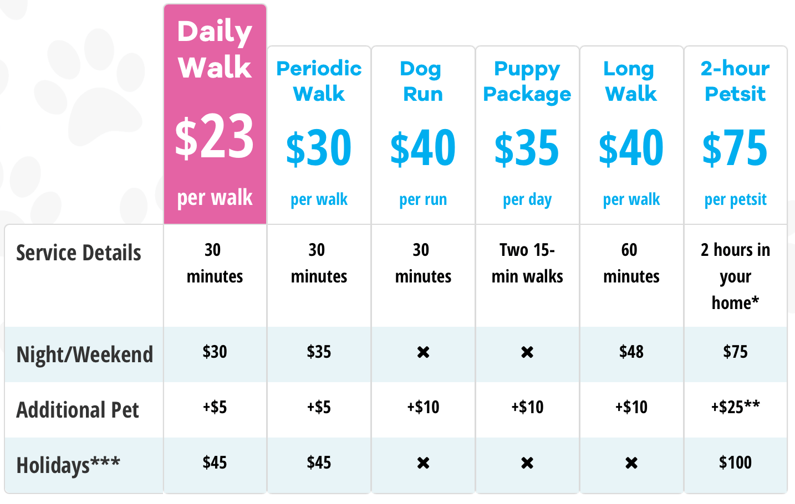
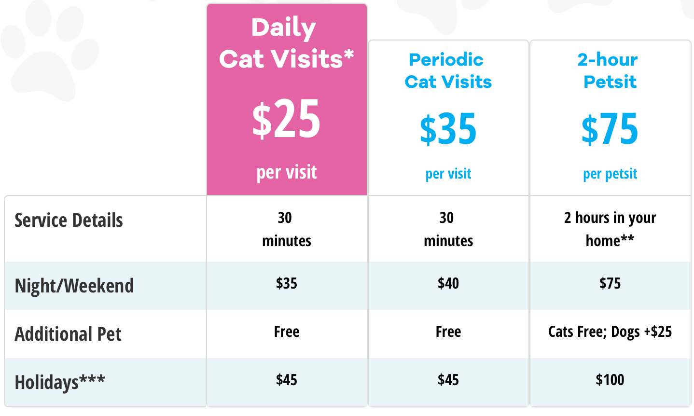
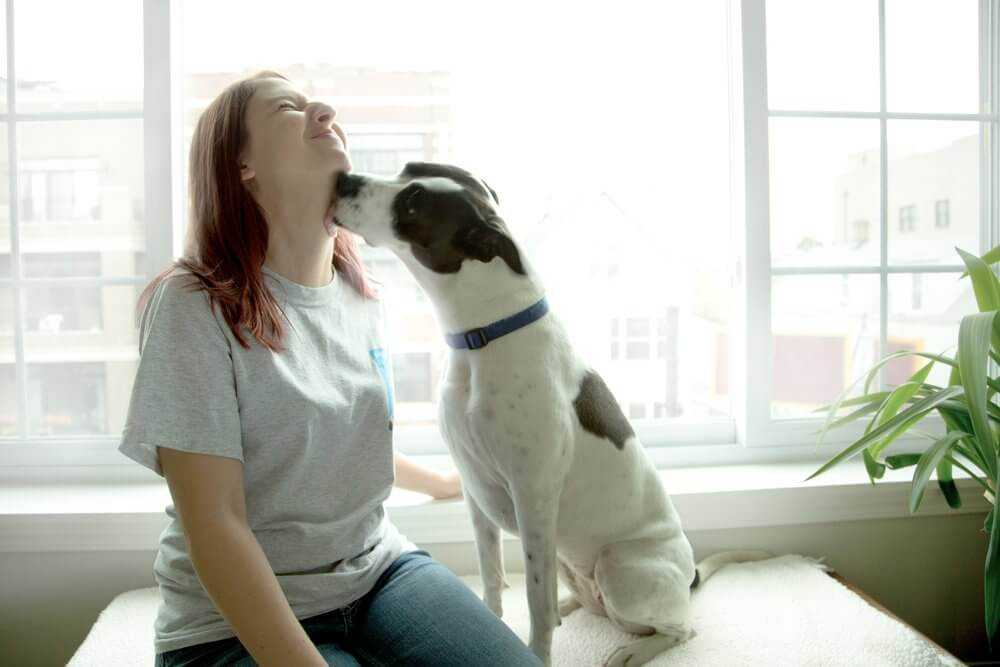
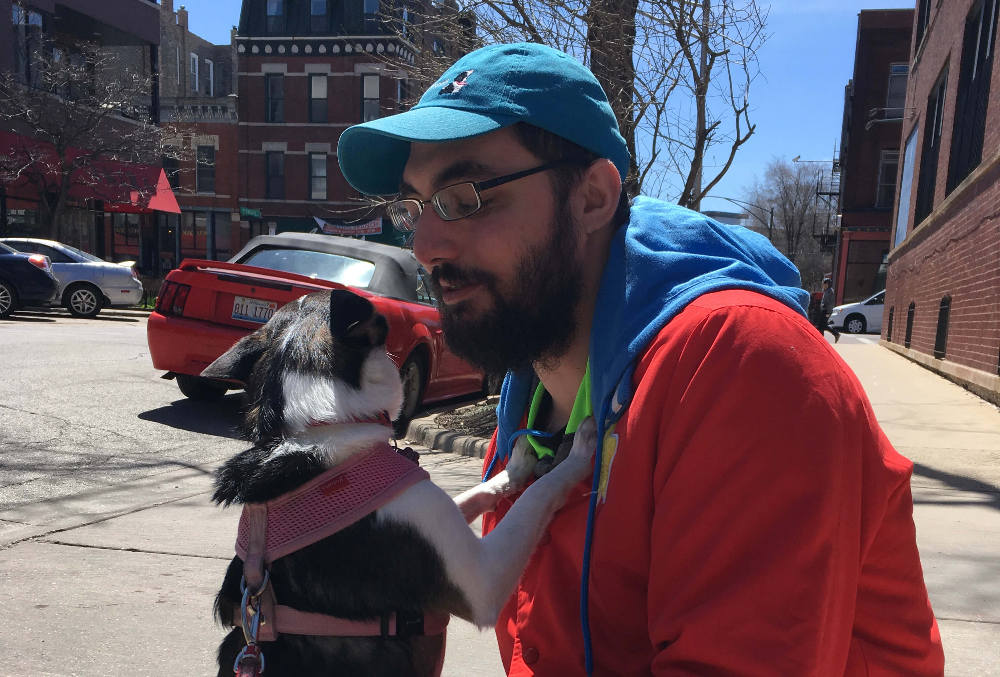

Who Are We?
Chicago’s Top-Rated Dog Walker for Busy Professionals
We are dog walkers catering to Chicago’s busy professionals. Windy City Paws dog walking services are built for those who need to balance their love for their dogs and their professional demands. You work. We walk. We have been walking dogs in Chicago since 2009. We’re Chicago’s top-rated dog walker for busy professionals offering GPS verification and online scheduling. Our owner, Katie Pape, founded Windy City Paws with the goal of bringing a higher level of service to dog walking that makes clients have joy and peace of mind knowing their dogs are with caring people and a professional organization.
Attentive Dog Walking
Windy City Paws dog walking service gives one on one attention to your dog. We do not pack walk. With Windy City Paws, you get the same dog walker every day – someone you can meet personally and trust to be in your home and providing the best care for your dog. We take pride in hiring caring, capable dog walkers who take their jobs seriously and the safety of your dog and home seriously.
Top-Rated Dog Walker
We are a top-rated dog walker on Yelp and Google. Windy City Paws dog walkers take pride in caring for your dogs and taking dog walking seriously. We follow a PawsFirst philosophy, meaning your dog will always come first in our care. As a company, we adhere to strict guidelines when we hire and train the best people to ensure your dog receives loving care and attention during dog walks.
Our Services
Dog Walks
Daily Walks
Clients who maintain recurring scheduled service with three (3) or more service days per week are entitled to our Daily Schedule pricing. Scheduled services are defined as Monday through Friday services between 8am to 5pm with recurring days and times (e.g.: M/W/F 11am-1pm).
Daily recurring dog walks provide you with a guaranteed schedule, a dedicated walker, and discounted pricing.
Periodic Dog Walks
If you have irregular or infrequent needs, you can still receive top-level care. Note that we cannot guarantee a consistent walker for every service. If your dog has specialized needs, Daily dog walking service is best, as you will be matched with a dedicated walker who is individually selected for your dog’s needs.

Cat Visits
Includes
Litterbox cleaning, Feeding, Enriching Playtime, Email visit recap, GPS Verification, Additional Household Tasks
Consistent Care
Clients who choose our daily cat visit service enjoy the consistency of care Windy City Paws provides. Daily cat visits feature the same cat sitter every day so your cat can bond with one person and get the most enriching companionship on a daily basis.
Cleansiness
Cleaning a litter box daily can be a challenge for busy professionals. Or, you may just hate doing it. Imagine never picking up a litter scoop again!
Our Team
Kaite: Owner
My love of dogs began as early as it gets
I can’t remember a time when I wasn’t begging my parents for a dog or dreaming of being a vet. Finally, when I was eight years old, we got our first family pet, a beautiful Golden Retriever named Ginger. I loved everything about having a furry companion – we did everything together! I’ve had a dog in my life ever since- two Golden Retrievers and one King Charles Cavalier Spaniel!
Julia: Manager
I moved to Chicago in 2013 and am originally from Alabama! When I first moved here, I missed our family dog Annie (awesome chocolate lab) so I looked into different things I could do that brought dogs back into my life! I called Katie and became a part of the incredible WCP team as a walker in the Lincoln Park area! I had such a great time walking and befriending the dogs of Chicago, I wanted to do more. I talked with Katie and became Walker Coordinator then eventually Manager! Katie is an incredible person to work with and for and I couldn’t see myself doing anything else! Since I became manager though, I missed my daily interactions with dogs, so Matt, my husband, and I adopted a beautiful and crazy mutt, named her Zelda, and she has become an amazing part of our family! In the evening I enjoy stage managing, performing, and doing other various jobs with different theaters in Chicago!
Marco: Field Operations Supervisor
I grew up in the burbs of Chicago before making my way to Pittsburg to study graphic design and then moving back to Chicago in 2012. I have been around animals practically my whole life, having grown up in a veritable zoo of dogs, cats, birds, fish, and small furry critters and now owning two absolutely ridiculous rescue pit-mixes Mako and Hercules, affectionally dubbed the Nerd Herd. I’ve been a regular fixture in the pet community around Andersonville for a little over 3 years and I’m excited to apply all I’ve learned to my work here at Windy City Paws! When not constantly surrounding myself with all sorts of animals I also enjoy cooking, Lego building, and DMing for a DnD group.